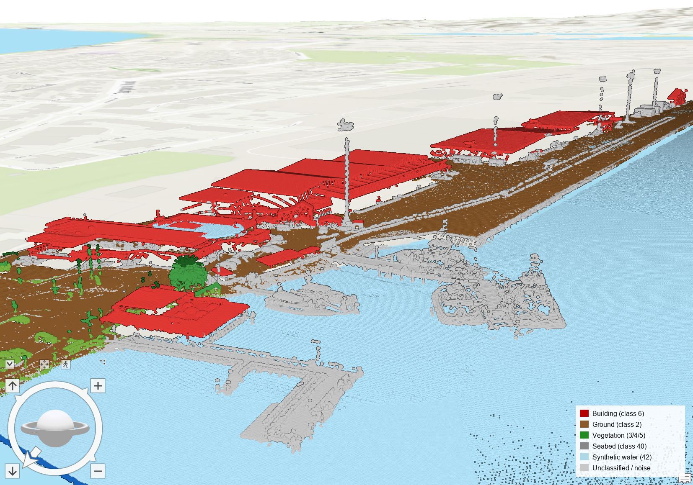
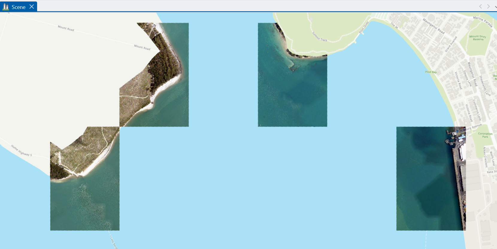
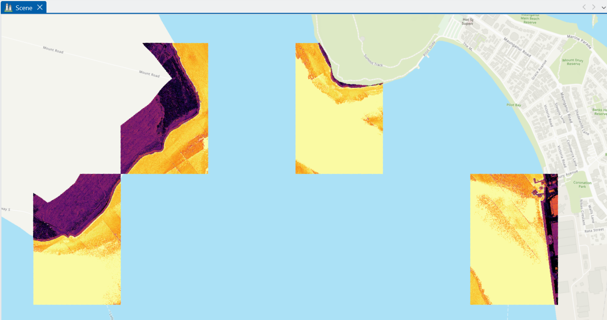
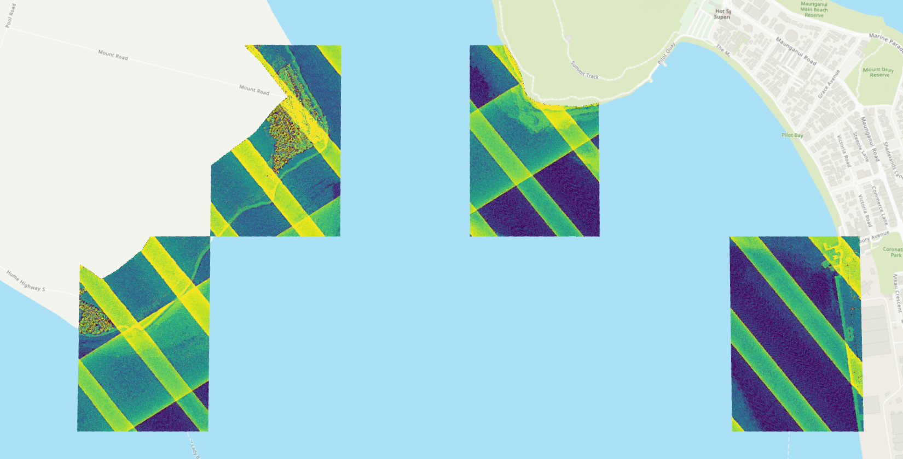
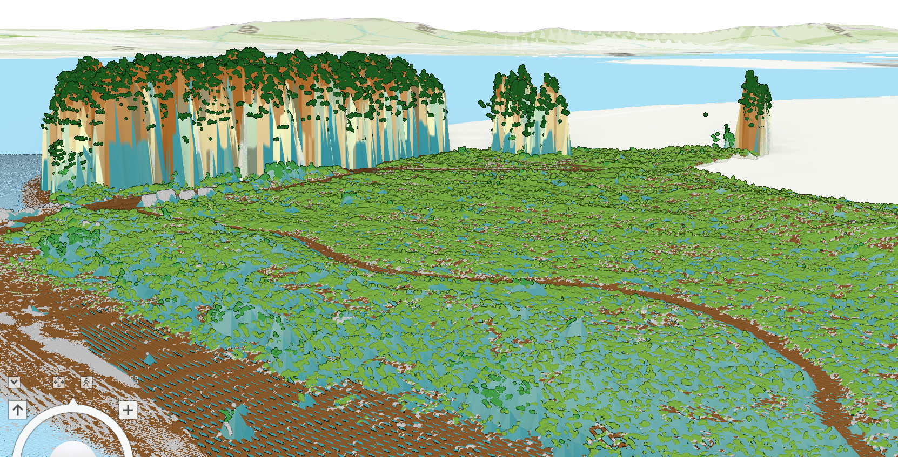
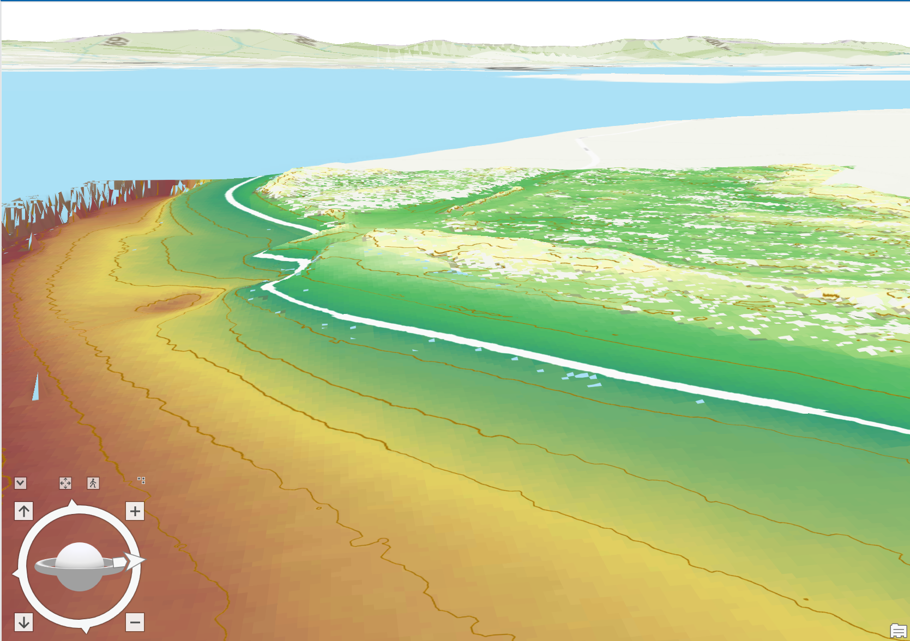
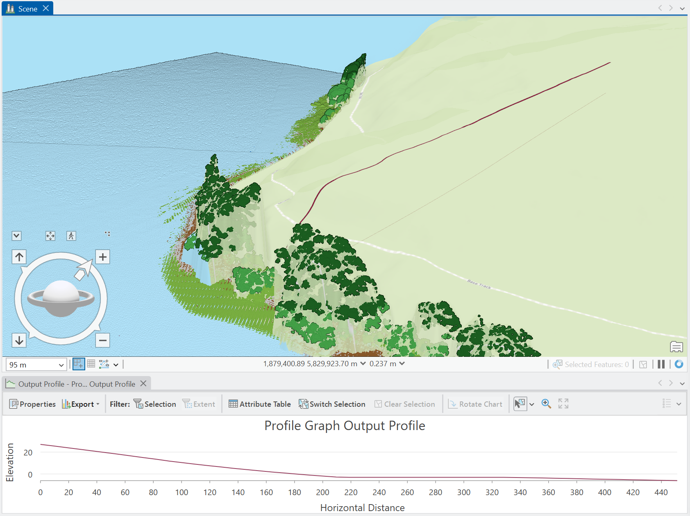

Tauranga coastal LiDAR — QC and 1 m ArcGIS products
Exploratory first-line checks and 1 m raster products from a real topo + bathymetric point-cloud delivery, rebuilt in ArcGIS Pro, with explicit limits on density, accuracy and tidal interpretation.
The work examines how topographic, bathymetric and processing-generated records behave in a selected sample, and documents what the resulting products can support — and what they cannot.
1 · Scope and source data
This independent demonstration uses 40,750,811 records from four selected tiles of the New Zealand Coastal LiDAR Point Cloud, collected through LINZ's 3D Coastal Mapping programme. The sample is around Tauranga Harbour, one of New Zealand's busiest ports.
The work covers downloading and managing source files, inspecting structure and attributes, generating exploratory 1 m raster products in ArcGIS Pro, and explaining the evidence and its limits. Source classifications are inherited from the delivery; their accuracy has not been independently validated.
This is an exploratory portfolio study. Formal supplier acceptance, independent positional accuracy, density compliance, a verified Chart Datum transformation, and a verified intertidal boundary were not established here. They are listed as follow-up work in §7.
| Source layer | LINZ Data Service · d3Y5Qkvcp5Q5vXf · export metadata dated 7 October 2026 |
|---|---|
| File structure | LAS 1.4, point data record format 8; original payloads LAZ-compressed with COPC; converted files uncompressed LAS |
| Horizontal reference | NZGD2000 / New Zealand Transverse Mercator 2000 · EPSG:2193 |
| Vertical reference | NZVD2016 height (EPSG:7839), confirmed in source WKT. This checks the metadata label, not measurement accuracy. |
| File sizes | ~390 MB compressed LAZ across 4 tiles; ~1.55 GB as converted LAS. Raw point files are not included in this report package. |
| Decoded point-record times | 2025-01-28 to 2025-02-18 UTC (Adjusted Standard GPS Time). This range does not imply continuous acquisition throughout the interval. |
| Scan angle | Raw int16 −3249 to +3249; PDRF8 scale 0.006° → ±19.494°, consistent across all four tiles. |
| Licence | CC BY 4.0 — "Sourced from the LINZ Data Service and licensed for reuse under the CC BY 4.0 licence." |
The four tiles do not form continuous harbour coverage
2 · First-line checks: records, classes and flags
The audit reads the four converted LAS files, checks headers against the originals, and summarises classifications, flags, elevations, intensity and encoded times. The figures describe delivered records; they are not acceptance-test results.
| Tile | Records | All-record mean records/m² | Ground class 2 | Seabed class 40 | Synthetic water class 42 | Min class-40 Z (m NZVD2016) |
|---|---|---|---|---|---|---|
| 1206 | 10,304,404 | 29.8 | 1,411,241 | 1,004,015 | 1,615,638 | −5.40 |
| 1208 | 9,465,971 | 27.4 | 65,976 | 555,503 | 4,126,195 | −15.33 |
| 1305 | 12,476,448 | 36.1 | 1,140,609 | 583,583 | 3,794,917 | −10.48 |
| 1310 | 8,503,988 | 24.6 | 662,235 | 381,955 | 3,463,997 | −17.45 |
Mean density divides all delivered records by each tile's source-coordinate bounding rectangle. The numerator includes synthetic, withheld, vendor-labelled noise and multiple returns. It does not measure compliance with a minimum survey-density requirement.
Water-surface classes in this sample: The delivery metadata uses the ASPRS topobathymetric classification scheme: class 40 (seabed), class 41 (detected water-surface return) and class 42 (synthetic water-surface point generated during refraction processing). In this 4-tile subset, class 40 = 2,525,056 records, class 42 = 13,000,747 records, and class 41 has no records. The 13.0 M class-42 points are not a subset of class 41; they are separate, vendor-generated derived points.
The 3DCM project export metadata specifies minimum densities of 2 pts/m² above the drying line and 1 pt/m² below, together with positional-accuracy requirements for bathymetric returns. This is a project-specific requirement, distinct from LINZ's separate National Aerial LiDAR Base Specification. Assessing compliance requires a matching point-selection policy, appropriate land/bathymetry domains, spatial density and coverage tests, and suitable independent reference data. Density and accuracy compliance were not assessed here.
Flagged for omission from ordinary processing. Presence does not itself establish an overlap-trimming rule, edge-trimming rule, or COPC-specific behaviour; the supplier's flag policy would need to be checked. Excluded from the ArcGIS density raster.
Derived water-surface points generated during refraction processing, not independent measured terrain returns. Uniform intensity 65,530 across all 13.0 M points — see §3.
Classification counts and project definitions
Classes present in this 4-tile subset (confirmed by ArcGIS LAS Dataset Statistics and the per-class elevation audit): 1 unclassified, 2 ground, 3 low vegetation, 4 medium vegetation, 5 high vegetation, 6 building, 7 low noise, 40 seabed, 42 synthetic water surface, and 45 (bathymetric noise as labelled in this delivery). Classes absent in this subset: 9 topographic water, 18 high noise, 41 detected water surface, 43 submerged object. Counts do not establish classification accuracy — they are inherited from the vendor delivery and were not independently validated. The names for classes 7 and 45 follow the labels used in this delivery; their semantics should be confirmed against the project metadata rather than assumed from generic ASPRS.
Extreme elevations are not a depth validation
The all-record elevation range is approximately −117.6 to +86.8 m NZVD2016. The most negative record (tile 1305, −117.56 m) and the maximum record (+86.79 m) are both labelled class 7, low noise. Noise-labelled records must not be used to describe the deepest seabed or the highest valid land feature. Tile 1310's most negative record (−45.64 m) is class 45 (bathymetric noise).
The minimum elevation among delivered class-40 seabed records is −17.45 m NZVD2016. This is a class-specific sample statistic. It does not establish the maximum harbour depth, independently validate the classification, or verify a channel depth stated below Chart Datum — that would require a verified datum connection, concurrent reference soundings, and location matching.

3 · QC finding: uniform intensity on synthetic water surfaces
All 13.0 M class-42 records have intensity = 65,530. The export metadata defines class 42 as a synthetic water surface used in refraction processing. This establishes a uniform stored attribute associated with derived points; why that value was assigned has not been established.
| Population | Records | Mean | Median | P95 |
|---|---|---|---|---|
| All records (as delivered) | 40,750,811 | 34,545 | — | 65,530 |
| Excluding class 42 only | 27,750,064 | 20,028 | 16,009 | 61,479 |
"Excluding class 42 only" still includes withheld and noise-labelled records, so p95 = 61,479 is not a "clean" real-return intensity. These are point-level summaries, not newly generated intensity rasters.
Intensity is a system-specific return-magnitude attribute, not calibrated reflectance. Comparing these values does not identify a laser wavelength, explain a physical water-reflection mechanism, or prove sensor saturation. The unsigned 16-bit field limit is 65,535; the observed value of 65,530 alone is not a saturation test.
The existing ArcGIS intensity raster still includes synthetic class 42 — roughly 43.8% of valid cells read 65,530. The image is retained to illustrate how point selection influences a product. A screened-return raster would require a separate, documented regeneration (a follow-up, not claimed here).
Attribute definition: ASPRS intensity and classification flags. The assignment mechanism for the uniform 65,530 value on synthetic points needs vendor clarification.
4 · ArcGIS Pro workflow (step by step)
The product set was generated in ArcGIS Pro from the four converted LAS tiles. Supporting Python QC (laspy/numpy) audited classifications, flags, intensity statistics and the resulting raster properties.
| Step | ArcGIS tool / pane | Parameters used | Output |
|---|---|---|---|
| 1. Build LAS dataset | LAS Dataset → Add files | 4 converted LAS tiles; NZTM2000 + NZVD2016 | coastal.lasd |
| 2. Classification symbology | Symbology → Classify | Class 2 ground, 6 building, 40 seabed, 42 synthetic water | 3D scene |
| 3. DTM (ground + seabed) | LAS Dataset To Raster | Elevation · Binning Average · 1 m · Void Fill None · ground+seabed filter | DTM_1m_nofill.tif |
| 4. DSM (highest return) | LAS Dataset To Raster | Elevation · Binning Maximum · 1 m · All Points filter | DSM_1m.tif |
| 5. RGB true colour | LAS Dataset To Raster | Value = RGB · Binning Average · 1 m | RGB_1m.tif |
| 6. Return intensity | LAS Dataset To Raster | Value = Intensity · Binning Average · 1 m · (display: histogram equalisation) | intensity_1m.tif |
| 7. Point density | LAS Point Statistics As Raster | Property = Point Count · 1 m · (display: histogram equalisation) | density_1m.tif |
| 8. Hillshade | Hillshade (Spatial Analyst) | Azimuth 315° · Altitude 45° · no shadow modelling | hillshade_1m.tif |
| 9. Land–seabed DTM colour | Symbology → Stretch | Purple→blue→green→yellow ramp; 0 m NZVD2016 contour as an elevation reference | Continuous DTM 3D + 2D |
| 10. Profile transect | Analysis → Exploratory 3D Analysis → Elevation Profile | Line from Sulphur Point across channel | Elevation vs distance (~25 m → ~0 m over 450 m) |
| 11. Vertical exaggeration | Explore → Command Search (Alt+Q) | Vertical Exaggeration = 5.00 | 3D terrain relief readable |
ArcGIS XML records the tools and numeric parameters, but does not fully preserve the contributing layer's classification and flag filters. Effective populations are supported by the read-only file audit; a complete re-run also requires saved filter definitions. Histogram equalisation is a display setting, not a point-selection or gridding method.
Methods: LAS Dataset To Raster · LAS Point Statistics As Raster.
5 · Audited ArcGIS products
Five existing ArcGIS rasters were inspected. All use 1 m cells, 2,880 × 1,440, bounds E 1,877,920–1,880,800 m / N 5,828,640–5,830,080 m. GeoTIFFs encode EPSG:2193 horizontally; elevation values inherit NZVD2016 metres from the LAS.
| Product | Recorded ArcGIS method | Audited interpretation |
|---|---|---|
| Ground–seabed DTM prototype | LAS Dataset To Raster · Elevation · Binning Average · Void Fill None | Classes 2 and 40 supply the points. In this sample, neither class carries withheld or synthetic flags. Cells without selected terrain points remain NoData — gaps are shown as absence, not interpolated. |
| DSM candidate | LAS Dataset To Raster · Elevation · Binning Maximum · Void Fill None | Highest eligible elevation per cell, including water-related and synthetic class-42 surfaces. It is not a land-only or exclusively measured-return DSM. A re-run filtering out class 42 is a follow-up. |
| Point-count raster | LAS Point Statistics As Raster · Point Count · 1 m | Non-withheld counts; include synthetic class 42. For 1 m² cells, counts are points/m² for this population — not a spec-compliance density. |
| Mean intensity raster | LAS Dataset To Raster · Intensity · Binning Average · Void Fill None | Includes synthetic class 42. This is the existing mixed-population product, not a raster corrected by the point-level statistics in §3. |
| Gridded point RGB | LAS Dataset To Raster · RGB · Binning Average · Void Fill None | Three source RGB attributes aggregated to cells. Colour provenance not independently assessed; this is not a newly validated orthophoto. |




Land and seabed in a common reference
Combining classes 2 and 40 demonstrates a ground–seabed elevation product within one source survey and one vertical reference. It does not complete fusion with independently acquired multibeam data, resolve a Chart Datum conversion, or establish continuous coverage across the harbour.


6 · Vertical datums and tidal interpretation
The source elevations are referenced to NZVD2016, a gravity-based national height reference defined independently of local sea level. Tauranga tide predictions state heights above local Chart Datum. A zero-height NZVD2016 contour is an elevation contour; it cannot be assumed to identify a shoreline or a tidal boundary.
Delivered class-42 synthetic water-surface records cluster near the water surface in NZVD2016. Their point-weighted elevation describes sampled water surfaces at acquisition times; it is not Mean Sea Level. Point density, flight geometry, timing and water conditions affect the distribution — millions of nearby returns are not millions of independent long-term sea-level observations. The midpoint of published mean high and low water is likewise not MSL.
No NZVD2016–Chart Datum offset, MHWS elevation, surveyed drying line or verified intertidal area is calculated in this report. A high–low tide midpoint and an airborne water-surface median do not establish that connection. Earlier drafts estimated CD ≈ −1.28 m and MHWS ≈ +0.6 m NZVD2016; those are removed.
LINZ defines Tauranga Chart Datum as 4.103 m below benchmark BC 84 (B309). A local connection can be investigated using:
Chart Datum elevation in NZVD2016 = applicable B309 NZVD2016 height − 4.103 m
The applicable benchmark height, connection record, uncertainty and spatial use must be verified before using this relationship. That work has not been completed here. A local port connection should not be extended across the harbour without checking its applicability. LINZ's Joining Land and Sea (JLAS) framework uses surveyed tide-gauge and benchmark connections, mean sea-surface information and tidal surfaces to support datum integration — it provides the methodological context for future work; no unverified local transformation is substituted for that evidence.
Problem log: how unfamiliar problems were handled
| Problem hit | Diagnosis | Resolution |
|---|---|---|
| ".las" files failed laspy read | Extension was .las but payload was LAZ-compressed | Pass explicit Laszip backend; verified LAS 1.4 PDRF8 + embedded WKT before processing. |
| GPS times initially decoded to 1993 | Header flags Adjusted Standard GPS Time; correct epoch handling yields 2025-01-28 to 2025-02-18 UTC | Decoded range documented in §1; no "vendor epoch anomaly" claim. |
| Apparent intensity p95 = 65,530 looked like sensor saturation | All 13.0 M class-42 synthetic water points store intensity 65,530; the assignment mechanism was not established | A second point-level intensity summary was calculated with class 42 excluded; the existing ArcGIS intensity raster was retained and clearly labelled as still including class 42, pending a documented re-run. |
7 · Provenance, reproducibility and next steps
The evidence snapshot records source-file SHA-256 hashes, header metadata, per-tile counts, class/flag summaries, explicit intensity populations, decoded times and audited ArcGIS raster properties. These support the reported observations without including the large point-cloud files in Git.
| Component | Status | Meaning |
|---|---|---|
| Chunked LAS / existing-raster audit (Python) | Included and run | Reads converted PDRF8 LAS and existing ArcGIS products; creates the evidence snapshot without changing inputs. |
| ArcGIS Pro product generation | Partially documented | Tools, parameters and screenshots record the products; saved input-layer filters and a tested re-run workflow are still needed. |
| Point-cloud-to-raster re-run from scratch | Not demonstrated | Filters (exclude withheld, class 42 from intensity/DSM) need to be saved and a fresh run verified. |
| National-scale processing / public catalogue | Not demonstrated | No claim that this local workflow has been tested on the whole national layer or accepted for LINZ publication. Scaling to the national layer would require a more scalable processing strategy, potentially including COPC streaming, tiled/out-of-core gridding or parallel processing. |
| Formal acceptance / independent accuracy | Out of scope | Needs ground control, reference soundings, and LINZ QA procedure — not part of this demo. |
Next-step candidates for the Sea Squad
- Complete processing provenance. Save each input layer's class/flag filters, align output grids and masks, and test a fresh point-cloud-to-raster run (including the class-42 exclusion from intensity and DSM).
- Evaluate product consistency. Compare against compatible versions of LINZ's published Coastal LiDAR 1 m DEM and DSM; if both use the same survey, the comparison assesses processing consistency rather than independent measurement accuracy.
- Perform independent QA. Use suitable reference observations to assess positional and classification accuracy, and documented spatial density/coverage methods rather than tile-average all-record counts.
- Establish a local datum connection. Verify the B309 benchmark and tide-gauge evidence before combining Chart-Datum bathymetry or identifying tidal boundaries.
- Prepare discoverable publication. Add complete product metadata, licences, stable access links and catalogue records to a reviewed delivery package.
The source point-cloud layer is imported independently of the published coastal DEM and DSM layers and may have a different update history. Product comparisons therefore require matching survey versions and dates, grid alignment and filters.
Sources and attribution
- LINZ New Zealand Coastal LiDAR Point Cloud; project classification definitions and requirements from the metadata supplied with the 7 October 2026 export.
- LINZ 3DCM Questions and answers — including the scope of QA (reference-data accuracy, DEM/DSM artefacts, metadata encoding).
- LINZ 3D Coastal Mapping programme / Joining Land and Sea — tide-gauge connections and tidal-surface integration.
- LINZ Sea-level heights and tidal definitions.
- LINZ standard-port Chart Datum definitions and tidal-level guidance for surveyors.
- ASPRS LAS definition and LAS 1.4 R15 specification; COPC specification.
- Esri: LAS Dataset To Raster and LAS Point Statistics As Raster.
- Published reference products: Coastal LiDAR 1 m DEM · Coastal LiDAR 1 m DSM · Survey index.
Source-data attribution: Sourced from the LINZ Data Service and licensed by Toitū Te Whenua Land Information New Zealand, for re-use under CC BY 4.0.
Figures are ArcGIS Pro scene and raster screenshots, except the tile-layout schematic assembled from audited bounds. Contextual basemap material appears in screenshots; the LINZ attribution above identifies the source point cloud. No authoritative navigation, surveyed boundary or formal acceptance status is asserted.